Number identification¶
Most function in mpmath are concerned with producing approximations from exact mathematical formulas. It is also useful to consider the inverse problem: given only a decimal approximation for a number, such as 0.7320508075688772935274463, is it possible to find an exact formula?
Subject to certain restrictions, such “reverse engineering” is indeed possible thanks to the existence of integer relation algorithms. Mpmath implements the PSLQ algorithm (developed by H. Ferguson), which is one such algorithm.
Automated number recognition based on PSLQ is not a silver bullet. Any occurring transcendental constants ( ,
,  , etc) must be guessed by the user, and the relation between those constants in the formula must be linear (such as 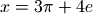). More complex formulas can be found by combining PSLQ with functional transformations; however, this is only feasible to a limited extent since the computation time grows exponentially with the number of operations that need to be combined.
, etc) must be guessed by the user, and the relation between those constants in the formula must be linear (such as 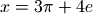). More complex formulas can be found by combining PSLQ with functional transformations; however, this is only feasible to a limited extent since the computation time grows exponentially with the number of operations that need to be combined.
The number identification facilities in mpmath are inspired by the Inverse Symbolic Calculator (ISC). The ISC is more powerful than mpmath, as it uses a lookup table of millions of precomputed constants (thereby mitigating the problem with exponential complexity).
Constant recognition (identify)¶
- mpmath.identification.identify(x, constants=[], tol=None, maxcoeff=1000, full=False, verbose=False)¶
Given a real number
 , identify(x) attempts to find an exact
formula for . This formula is returned as a string. If no match
is found, None is returned. With full=True, a list of
matching formulas is returned.
, identify(x) attempts to find an exact
formula for . This formula is returned as a string. If no match
is found, None is returned. With full=True, a list of
matching formulas is returned.As a simple example, identify() will find an algebraic formula for the golden ratio:
>>> from mpmath import * >>> mp.dps = 15; mp.pretty = True >>> identify(phi) '((1+sqrt(5))/2)'
identify() can identify simple algebraic numbers and simple combinations of given base constants, as well as certain basic transformations thereof. More specifically, identify() looks for the following:
- Fractions
- Quadratic algebraic numbers
- Rational linear combinations of the base constants
- Any of the above after first transforming into 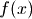 where
is
 ,
,  , 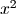, 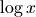 or 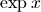, either
directly or with or multiplied or divided by one of
the base constants
, 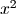, 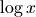 or 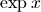, either
directly or with or multiplied or divided by one of
the base constants - Products of fractional powers of the base constants and small integers
Base constants can be given as a list of strings representing mpmath expressions (identify() will eval the strings to numerical values and use the original strings for the output), or as a dict of formula:value pairs.
In order not to produce spurious results, identify() should be used with high precision; preferrably 50 digits or more.
Examples
Simple identifications can be performed safely at standard precision. Here the default recognition of rational, algebraic, and exp/log of algebraic numbers is demonstrated:
>>> mp.dps = 15 >>> identify(0.22222222222222222) '(2/9)' >>> identify(1.9662210973805663) 'sqrt(((24+sqrt(48))/8))' >>> identify(4.1132503787829275) 'exp((sqrt(8)/2))' >>> identify(0.881373587019543) 'log(((2+sqrt(8))/2))'
By default, identify() does not recognize
. At standard
precision it finds a not too useful approximation. At slightly
increased precision, this approximation is no longer accurate
enough and identify() more correctly returns None:>>> identify(pi) '(2**(176/117)*3**(20/117)*5**(35/39))/(7**(92/117))' >>> mp.dps = 30 >>> identify(pi) >>>
Numbers such as
, and simple combinations of user-defined
constants, can be identified if they are provided explicitly:>>> identify(3*pi-2*e, ['pi', 'e']) '(3*pi + (-2)*e)'
Here is an example using a dict of constants. Note that the constants need not be “atomic”; identify() can just as well express the given number in terms of expressions given by formulas:
>>> identify(pi+e, {'a':pi+2, 'b':2*e}) '((-2) + 1*a + (1/2)*b)'
Next, we attempt some identifications with a set of base constants. It is necessary to increase the precision a bit.
>>> mp.dps = 50 >>> base = ['sqrt(2)','pi','log(2)'] >>> identify(0.25, base) '(1/4)' >>> identify(3*pi + 2*sqrt(2) + 5*log(2)/7, base) '(2*sqrt(2) + 3*pi + (5/7)*log(2))' >>> identify(exp(pi+2), base) 'exp((2 + 1*pi))' >>> identify(1/(3+sqrt(2)), base) '((3/7) + (-1/7)*sqrt(2))' >>> identify(sqrt(2)/(3*pi+4), base) 'sqrt(2)/(4 + 3*pi)' >>> identify(5**(mpf(1)/3)*pi*log(2)**2, base) '5**(1/3)*pi*log(2)**2'
An example of an erroneous solution being found when too low precision is used:
>>> mp.dps = 15 >>> identify(1/(3*pi-4*e+sqrt(8)), ['pi', 'e', 'sqrt(2)']) '((11/25) + (-158/75)*pi + (76/75)*e + (44/15)*sqrt(2))' >>> mp.dps = 50 >>> identify(1/(3*pi-4*e+sqrt(8)), ['pi', 'e', 'sqrt(2)']) '1/(3*pi + (-4)*e + 2*sqrt(2))'
Finding approximate solutions
The tolerance tol defaults to 3/4 of the working precision. Lowering the tolerance is useful for finding approximate matches. We can for example try to generate approximations for pi:
>>> mp.dps = 15 >>> identify(pi, tol=1e-2) '(22/7)' >>> identify(pi, tol=1e-3) '(355/113)' >>> identify(pi, tol=1e-10) '(5**(339/269))/(2**(64/269)*3**(13/269)*7**(92/269))'
With full=True, and by supplying a few base constants, identify can generate almost endless lists of approximations for any number (the output below has been truncated to show only the first few):
>>> for p in identify(pi, ['e', 'catalan'], tol=1e-5, full=True): ... print p ... # doctest: +ELLIPSIS e/log((6 + (-4/3)*e)) (3**3*5*e*catalan**2)/(2*7**2) sqrt(((-13) + 1*e + 22*catalan)) log(((-6) + 24*e + 4*catalan)/e) exp(catalan*((-1/5) + (8/15)*e)) catalan*(6 + (-6)*e + 15*catalan) sqrt((5 + 26*e + (-3)*catalan))/e e*sqrt(((-27) + 2*e + 25*catalan)) log(((-1) + (-11)*e + 59*catalan)) ((3/20) + (21/20)*e + (3/20)*catalan) ...
The numerical values are roughly as close to pi as permitted by the specified tolerance:
>>> e/log(6-4*e/3) 3.14157719846001 >>> 135*e*catalan**2/98 3.14166950419369 >>> sqrt(e-13+22*catalan) 3.14158000062992 >>> log(24*e-6+4*catalan)-1 3.14158791577159
Symbolic processing
The output formula can be evaluated as a Python expression. Note however that if fractions (like ‘2/3’) are present in the formula, Python’s eval() may erroneously perform integer division. Note also that the output is not necessarily in the algebraically simplest form:
>>> identify(sqrt(2)) '(sqrt(8)/2)'
As a solution to both problems, consider using SymPy’s sympify() to convert the formula into a symbolic expression. SymPy can be used to pretty-print or further simplify the formula symbolically:
>>> from sympy import sympify >>> sympify(identify(sqrt(2))) 2**(1/2)
Sometimes identify() can simplify an expression further than a symbolic algorithm:
>>> from sympy import simplify >>> x = sympify('-1/(-3/2+(1/2)*5**(1/2))*(3/2-1/2*5**(1/2))**(1/2)') >>> x (3/2 - 5**(1/2)/2)**(-1/2) >>> x = simplify(x) >>> x 2/(6 - 2*5**(1/2))**(1/2) >>> mp.dps = 30 >>> x = sympify(identify(x.evalf(30))) >>> x 1/2 + 5**(1/2)/2
(In fact, this functionality is available directly in SymPy as the function nsimplify(), which is essentially a wrapper for identify().)
Miscellaneous issues and limitations
The input
must be a real number. All base constants must be
positive real numbers and must not be rationals or rational linear
combinations of each other.The worst-case computation time grows quickly with the number of base constants. Already with 3 or 4 base constants, identify() may require several seconds to finish. To search for relations among a large number of constants, you should consider using pslq() directly.
The extended transformations are applied to x, not the constants separately. As a result, identify will for example be able to recognize exp(2*pi+3) with pi given as a base constant, but not 2*exp(pi)+3. It will be able to recognize the latter if exp(pi) is given explicitly as a base constant.
Algebraic identification (findpoly)¶
- mpmath.identification.findpoly(x, n=1, **kwargs)¶
findpoly(x, n) returns the coefficients of an integer polynomial
 of degree at most
of degree at most  such that 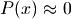.
If no polynomial having as a root can be found,
findpoly() returns None.
such that 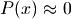.
If no polynomial having as a root can be found,
findpoly() returns None.findpoly() works by successively calling pslq() with the vectors 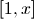, 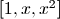, 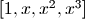, ..., 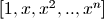 as input. Keyword arguments given to findpoly() are forwarded verbatim to pslq(). In particular, you can specify a tolerance for
 with tol
and a maximum permitted coefficient size with maxcoeff.
with tol
and a maximum permitted coefficient size with maxcoeff.For large values of
, it is recommended to run findpoly()
at high precision; preferrably 50 digits or more.Examples
By default (degree
 ), findpoly() simply finds a linear
polynomial with a rational root:
), findpoly() simply finds a linear
polynomial with a rational root:>>> from mpmath import * >>> mp.dps = 15; mp.pretty = True >>> findpoly(0.7) [-10, 7]
The generated coefficient list is valid input to polyval and polyroots:
>>> nprint(polyval(findpoly(phi, 2), phi), 1) -2.0e-16 >>> for r in polyroots(findpoly(phi, 2)): ... print r ... -0.618033988749895 1.61803398874989
Numbers of the form 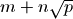 for integers 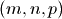 are solutions to quadratic equations. As we find here,
 is a root of the polynomial 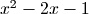:
is a root of the polynomial 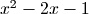:>>> findpoly(1+sqrt(2), 2) [1, -2, -1] >>> findroot(lambda x: x**2 - 2*x - 1, 1) 2.4142135623731
Despite only containing square roots, the following number results in a polynomial of degree 4:
>>> findpoly(sqrt(2)+sqrt(3), 4) [1, 0, -10, 0, 1]
In fact, 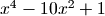 is the minimal polynomial of 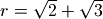, meaning that a rational polynomial of lower degree having 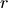 as a root does not exist. Given sufficient precision, findpoly() will usually find the correct minimal polynomial of a given algebraic number.
Non-algebraic numbers
If findpoly() fails to find a polynomial with given coefficient size and tolerance constraints, that means no such polynomial exists.
We can verify that
is not an algebraic number of degree 3 with
coefficients less than 1000:>>> mp.dps = 15 >>> findpoly(pi, 3) >>>
It is always possible to find an algebraic approximation of a number using one (or several) of the following methods:
- Increasing the permitted degree
- Allowing larger coefficients
- Reducing the tolerance
One example of each method is shown below:
>>> mp.dps = 15 >>> findpoly(pi, 4) [95, -545, 863, -183, -298] >>> findpoly(pi, 3, maxcoeff=10000) [836, -1734, -2658, -457] >>> findpoly(pi, 3, tol=1e-7) [-4, 22, -29, -2]
It is unknown whether Euler’s constant is transcendental (or even irrational). We can use findpoly() to check that if is an algebraic number, its minimal polynomial must have degree at least 7 and a coefficient of magnitude at least 1000000:
>>> mp.dps = 200 >>> findpoly(euler, 6, maxcoeff=10**6, tol=1e-100, maxsteps=1000) >>>
Note that the high precision and strict tolerance is necessary for such high-degree runs, since otherwise unwanted low-accuracy approximations will be detected. It may also be necessary to set maxsteps high to prevent a premature exit (before the coefficient bound has been reached). Running with verbose=True to get an idea what is happening can be useful.
Integer relations (pslq)¶
- mpmath.identification.pslq(x, tol=None, maxcoeff=1000, maxsteps=100, verbose=False)¶
Given a vector of real numbers 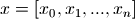, pslq(x) uses the PSLQ algorithm to find a list of integers 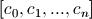 such that
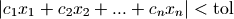
and such that 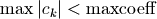. If no such vector exists, pslq() returns None. The tolerance defaults to 3/4 of the working precision.
Examples
Find rational approximations for
:>>> from mpmath import * >>> mp.dps = 15; mp.pretty = True >>> pslq([pi, 1], tol=0.01) [-7, 22] >>> pslq([pi, 1], tol=0.001) [113, -355]
Pi is not a rational number with denominator less than 1000:
>>> pslq([pi, 1]) >>>
To within the standard precision, it can however be approximated by at least one rational number with denominator less than 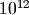:
>>> pslq([pi, 1], maxcoeff=10**12) [-75888275702L, 238410049439L] >>> mpf(_[1])/_[0] -3.14159265358979
The PSLQ algorithm can be applied to long vectors. For example, we can investigate the rational (in)dependence of integer square roots:
>>> mp.dps = 30 >>> pslq([sqrt(n) for n in range(2, 5+1)]) >>> >>> pslq([sqrt(n) for n in range(2, 6+1)]) >>> >>> pslq([sqrt(n) for n in range(2, 8+1)]) [2, 0, 0, 0, 0, 0, -1]
Machin formulas
A famous formula for
is Machin’s,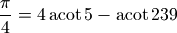
There are actually infinitely many formulas of this type. Two others are
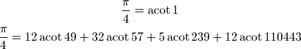
We can easily verify the formulas using the PSLQ algorithm:
>>> mp.dps = 30 >>> pslq([pi/4, acot(1)]) [1, -1] >>> pslq([pi/4, acot(5), acot(239)]) [1, -4, 1] >>> pslq([pi/4, acot(49), acot(57), acot(239), acot(110443)]) [1, -12, -32, 5, -12]
We could try to generate a custom Machin-like formula by running the PSLQ algorithm with a few inverse cotangent values, for example acot(2), acot(3) ... acot(10). Unfortunately, there is a linear dependence among these values, resulting in only that dependence being detected, with a zero coefficient for
:>>> pslq([pi] + [acot(n) for n in range(2,11)]) [0, 1, -1, 0, 0, 0, -1, 0, 0, 0]
We get better luck by removing linearly dependent terms:
>>> pslq([pi] + [acot(n) for n in range(2,11) if n not in (3, 5)]) [1, -8, 0, 0, 4, 0, 0, 0]
In other words, we found the following formula:
>>> 8*acot(2) - 4*acot(7) 3.14159265358979323846264338328 >>> +pi 3.14159265358979323846264338328
Algorithm
This is a fairly direct translation to Python of the pseudocode given by David Bailey, “The PSLQ Integer Relation Algorithm”: http://www.cecm.sfu.ca/organics/papers/bailey/paper/html/node3.html
The present implementation uses fixed-point instead of floating-point arithmetic, since this is significantly (about 7x) faster.